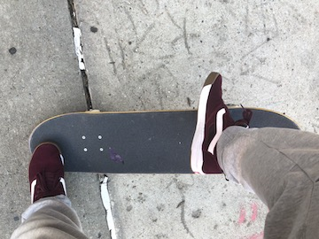
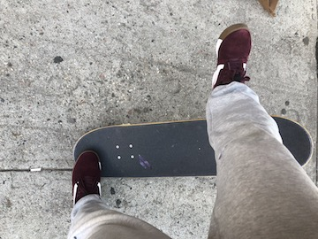

Now that your front foot is in position with toes hanging off and back foot
ready to pop, get ready to follow through. Begin by popping the board to lift
it from the ground and then... JUMP! Jump as high as you can. The longer hang
time you acheive while airborne, the more time you give your board to complete
its rotation. As you jump, slide your front foot all the way across the board
and when your foot reaches the nose of the board, flick your heel directly
forward to cause the board to flip in front of you. The tricky part? Its to be
all done in one motion. Pop - Jump - Slide front foot - Flick off the nose.

